Hér skrifa ég, Atli Tobiasson, fyrstu orð mín í vinnudagbók um þróun og framkvæmd sveppa-umhverfisins: Shroomville. Með mér í hóp er herra Finnur Mauritz Einarsson. Það mun því miður ekki gerast mikið í dag þar sem ég er að undirbúa mig fyrir próf á morgun en ég útbjó samt stutta kynningu um virknina á þessu tæki.
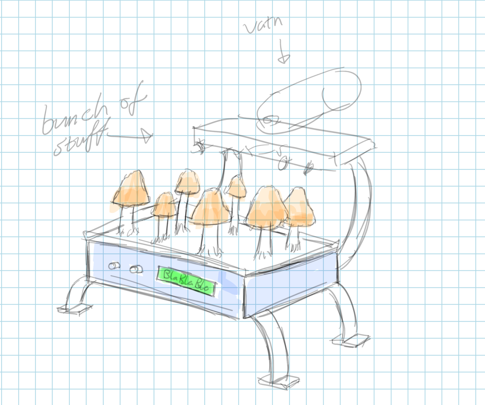
Svona verður mögulegt útlit á shroomville. Þá er hugmynd að virkni eftirfarandi:
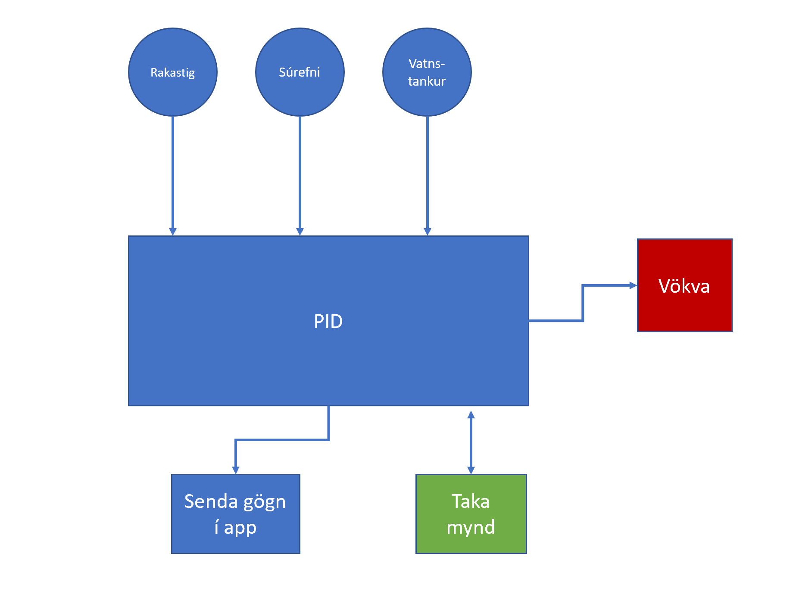
24.3.2022Sveppirnir sem við erum að rækta heita Lion's Mane. Þeir eru löglegir hér á Íslandi og er hægt að versla þá í hylkjaformi á vefsíðum eins og veganbudin.is.Við notum leiðbeiningarnar frá grocycle.com til að fræðast um það hvernig þessir sveppir eru ræktaðir. Útfrá þeim upplýsingum getum við metið þann búnað sem þarf í verkefnið. Hér eru breyturnar sem skipta máli
Líklegast getum við ekki fengið skynjara fyrir öll þessi gildi en við viljum allavega mæla hitastigið, rakan og súrefnið, og stýra umhverfinu eftir þörfum sveppanna. Raka- og hitaskynjara er hægt að fá í einum fjölnota skynjara á undir 500 ISK. Súrefnisskynjarinn er aðeins flóknari. Finnur Mauritz var búinn að finna eftirfarandi skynjara:
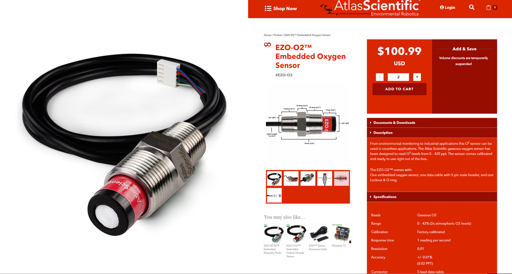
Eins og sjá má fer þessi á yfir 10.000 ISK en ef við fengum hann til að virka myndi það bæta virkni Shroomville töluvert mikið.Þá væri hægt að koma fyrir loftræstingu sem passar að halda góðu súrefnismagni í umhverfinu.
29.3.2022Í dag bjó ég til langan Trello lista með þeim skrefum sem þarf að framkvæma í þessu verkefni. Ég er að fá heimsókn frá þýsku fjölskyldunni minni á föstudaginn svo ég tók sénsinn og pantaði allt það sem mér datt í hug á amazon í augabragði. Þar á meðal voru hita og rakaskynjari, brauðbretti, mega 2560 örtölva og rakabætir. Þessir partar eru meira en helmingi ódýrari þegar þeir eru pantaðir í útlöndum og einnig eru þeir til (sem skiptir líka máli).Einnig fór ég rúnt um bæinn í leit að almennilegum jarðvegi. Þessi partur (grasafræðilegi parturinn) verkefnisins virðist afar flókinn. Ég varð meðlimur sveppasamfélagsins á facebook. Þar er fólk eins og Magnús Magnússon og Guðríður Gyða en þau eru fólk sem hefur brotist áfram í þessum geira af eigin rammleikÉg senti fyrirspurn á Magnús og bíð enn eftir svari. Einnig er kærasta Finns, Sigríður, með mikla reynslu í þessu og hefur hún einnig boðið hjálp sína fram.
4.4.2022Amazon sendingin okkar er komin. Þetta er það helsta:
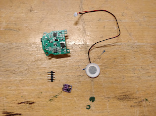
En einnig fengum við brauðbretti og örtölvuna sjálfa. Markmiðið nú er að tengja hita/raka skynjarann og læra að stjórna honum og einnig ná að stjórna rakabætinum. Svo þarf að hanna vatnstankinn sem sér rakabætinum fyrir vatni. Loks höfum við mælt okkur mót með Sigrúnu á morgun (þriðjudaginn) til að fá grasafræðilega hluta verkefnisins á hreint.Villi lánaði mér uppfinninguna sína, Þriðja Höndin, sem mun hjálpa mér í að lóða. Hún er mjög praktísk þar sem hún getur borið víra og einnig prentplötur.
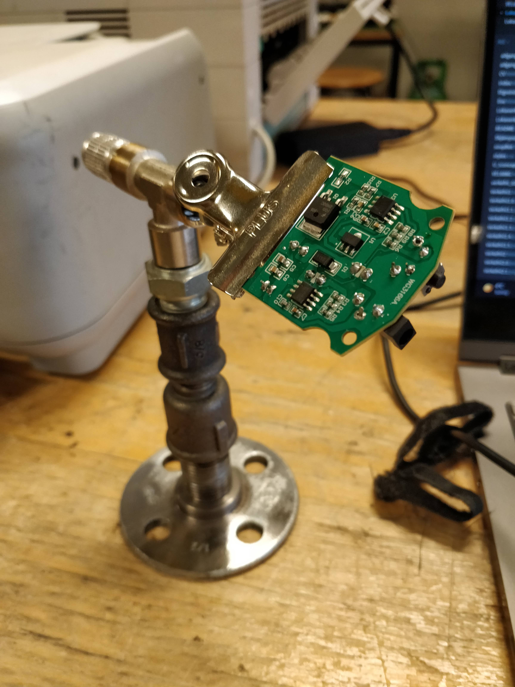
Nú væri ég einnig til í að fá lánað herpiádrag en það er soltið dýrt svo ég læt að sitja.
5.4.2022Ég fékk hita/rakaskynjarann til að virka og hann virðist vera mjög nákvæmur :-)
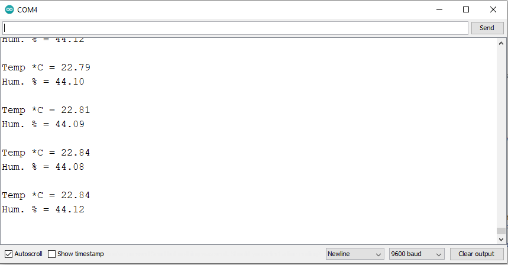
Rakabætirinn er diskur/tromla sem sveiflast með 113khz. Tromaln er lögð í vatn en það má ekki kaffæra henni. Tromlan er tengd við stýristöð sem gengur á 5-12 voltum
9.4.2022Nú ætla ég að virkja relayið. Ég fer eftir skrefunum úr þessu myndbandi:
Eftir margar tilraunir fæ ég relayinn því miður ekki til að virka svo ég fer í heimsókn til vinar míns, Ottó Már í rafmagnsverkfræði. Hann bendir mér á að vandamálið tengist transistorinum sem ég er að nota og að hann eigi að vera af sömu gerð og í myndbandinu hér að ofan (2N 3904). Ég plana þá að fara á mánudaginn í íhluti og kaupa mér hann.
10.4.2022Ég og Finnur Mauritz fórum nú saman í Bauhaus að versla OSB plötur og akrýl plötu fyrir kassann. Finnur tók akrýl plötuna heim til sín en ég tók OSB plöturnar og bútaði þá niður í þær stærðir sem passaði fyrir hönnun okkar.
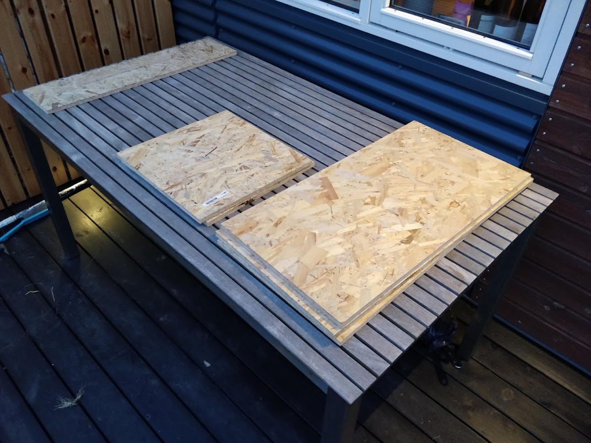
11.4.2022Nú fer ég í íhluti og kaupi nýja transistorinn fyrir heilar 31 krónu.
12.4.2022Þetta var mikill smíðadagur. Ég og Finnur dunduðum okkur lengi við að saga, hefta og líma saman kassann alræmda
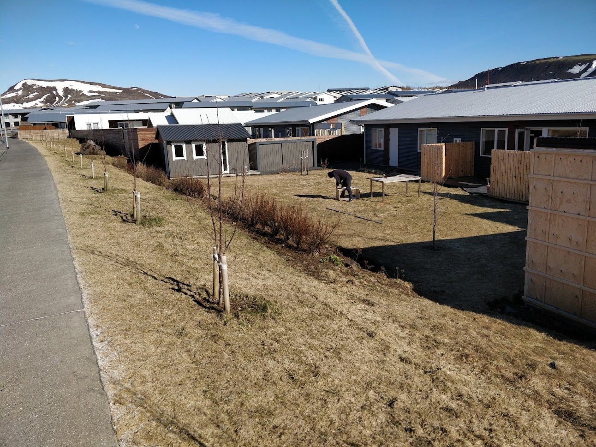
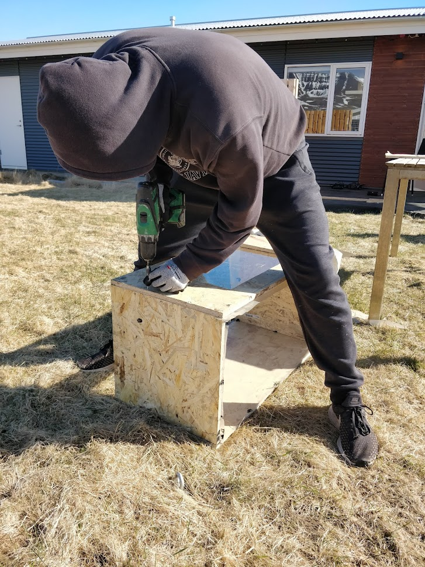
Um kvöldið reyndi ég svo að tengja nýja transistorinn fyrir relayið og það virkaði samt ekki. Svo hugsaði ég að viðnámið sem er milli pinna nr. 3 og transistorsins hljóti að vera gagnslaus. Ég prufaði að sleppa honum og tengja pinnann beint í transistorinn (miðjuna) og þá virkaði relayinn.
Þá tengdi ég rakabætinn við relayið og það virkaði ekki. Vandamálið er að þegar rafmagnið er tekið af rakabætinum þarf aftur að kveikja á honum með því að ýta á takkann sem fylgir honum. Þetta gat ég leyst einfaldlega með því að tengja reylaið beint við tromluna sjálfa sem er stýrð af prentplötunni (sem er partur af rakabætinum).
Pínu ruglandi texti.. en ég læt seinna fylgja skýringarmynd með öllum tengingum.
13.4.2022Í dag tókst mér að festa botnplötuna við kassann og þar með er kassinn nánast tilbúinn í notkun
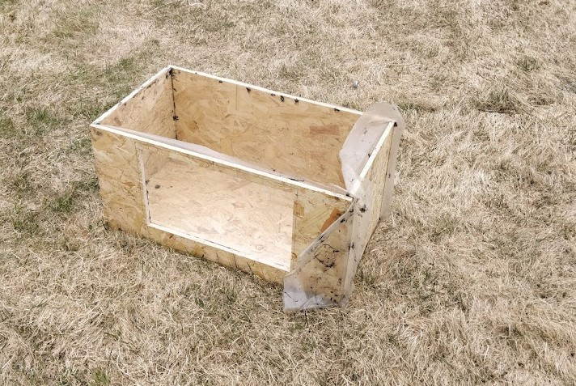
14.4.2022Í dag sótti ég 15kg af hardwood pellets hjá Magnúsi Magnússyni og sýndi hann mikinn áhuga á verkefninu okkar. Hann mældi með því að nota 80% hardwood pellets: 20% hveitihismi/hveitiklíð.Einnig útbjó ég skýringarmynd sem lýsir hvernig rakabætirinn er tengdur. Vonandi skýrir þetta hluti aðeins betur:
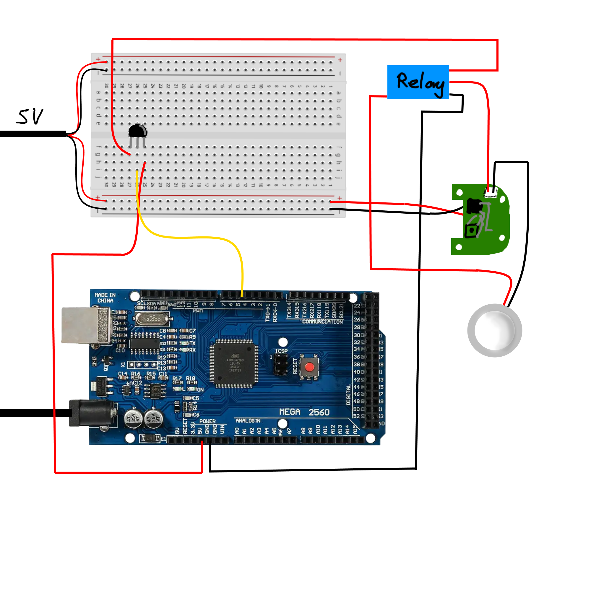
Núna reyni ég að virkja ultrasonic skynjarannFyrsta tilraunin var að fara eftir þessu myndbandi:
Þetta virkaði ekki. Gildin sem ég fékk voru 90% af tilfellunum algert bull. Ég þurfti að finna aðra leið. Ég fór á google að leita að hvað vandamálið gæti verið fyrir nákvæmlega þennan skynjara, HC-SR04. Ég fann þessa slóð. Ég afrita svo kóðann frá notendanum 'vffgaston' og þá virkar þetta (eins og sýnt er í þessu myndbandi).
15.4.2022Það er föstudagurinn langi svo allar búðir eru lokaðar. Í dag er samt sniðugt að reyna að fá vifturnar í gang. Ég fann þessar gömlu viftur sem pabbi hafði pantað frá kína fyrir löngu:
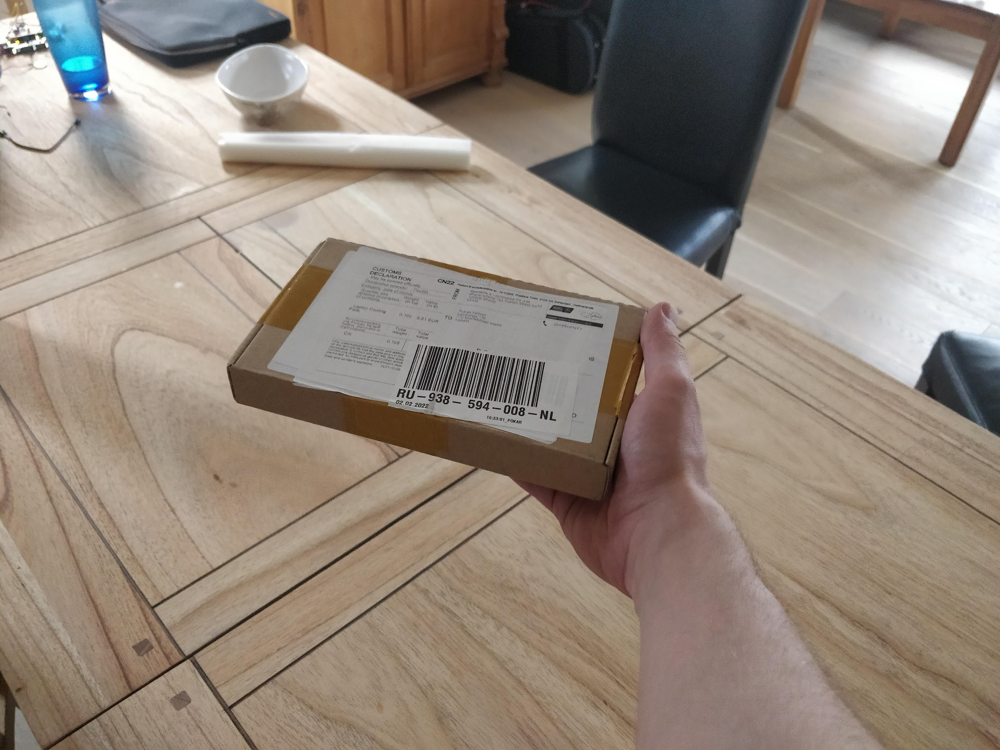
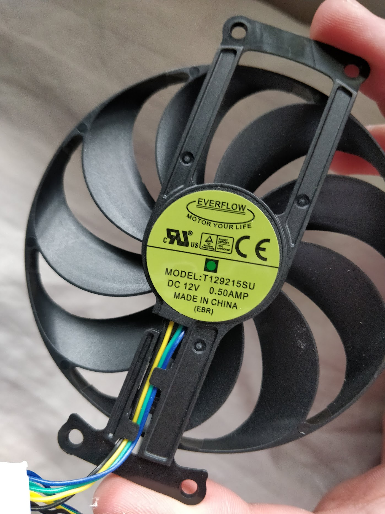
Ég fylgi skrefunum í þessu myndbandi:
... og það virkar ekki. Svona lítur þetta út hjá mér:
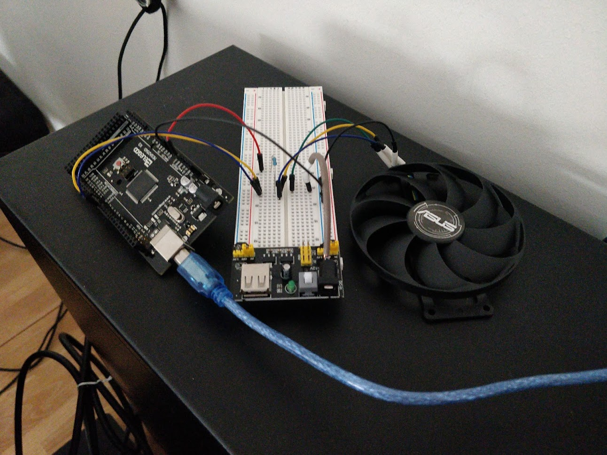
Ég bendi einnig á að nú er ég að nota 12V. Til þess þarf ég að tengja aflgjafann beint við brauðbrettið (brúna snúran) en aflgjafinn sem ég er með í láni er með stillanlega spennu.
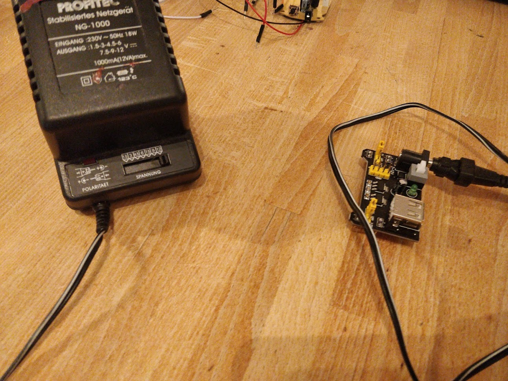
Nú er það bara ein önnur google-herferðin. Kom svo í ljós að þetta virkaði en litirnir á vírum viftunnar voru ekkert í samhengi við neitt. Með nokkrum handahófs-tilraunum fengum við þetta loks í gang.
16.4.2022Í dag fór ég til Magnúsar Magnússonar að sækja hardwood pellets-in. Við spjölluðum og hann benti mér á að best væri að hafa 80% hardwood pellets 20% hveitiklíð (steríliserað).Í dag var Finnur að dunda sér við að smíða lokið á sveppabælið. Það samanstóð af tveimur PVC-rörum (fyllt með jarðvegi sveppsins) og einni þykkri álplötu. Á meðan reif ég upp dósaborara og boraði þrjár holur í kassann. Þetta var að mestu leyti smíðadagur. Ég bræddi holur í vatnstankinn (sem var upphaflega bara kanna). Loks festi ég vifturnar tvær við kassannEinnig setti ég rörið inn sem sér rakabætinum fyrir vatni. Lóðrétti hluti rörsins inniheldur bómul sem hentar vel til að flytja vatnið upp og í rakabætinn.
17.4.2022Í dag vorum við Finnur að leggja lokahönd á allt smíðatengt varðandi sveppabælið. Við lögðum einnig fyrstu snúrurnar og notuðum meira kítti en ég tel heilbrigt fyrir meðalmann.
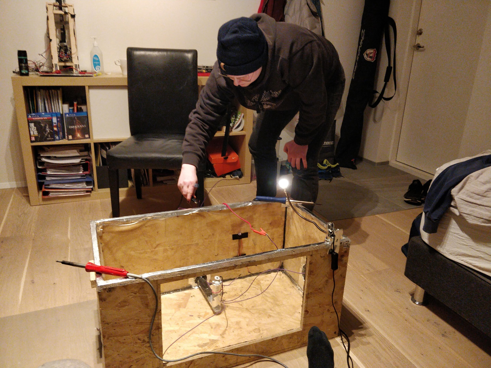
18.4.2022Ég og Finnur fluttum sveppabælið í VR-III til að vinna áfram í því. Nú gátum við lagt sveppabælið á hvolf og og sett allt í samband sem við þurftum. Fyrst settum við vifturnar í samband, svo rakabætinn og loks skynjarana tvo.Vonin var væntanlega að klára þetta í fljótu bragði og svo byrja að forrita. Svo varð ekki raunin. Við vorum að vesenast við snúrutengingar alveg þangað til...
19.4.2022 (0:00)Vifturnar virðast vera komnar í gang. Við erum einnig með fulla stjórn á hraða þeirra (með PWM aðferðinni). Þetta virkaði með tveimur 10K ohm viðnámum.
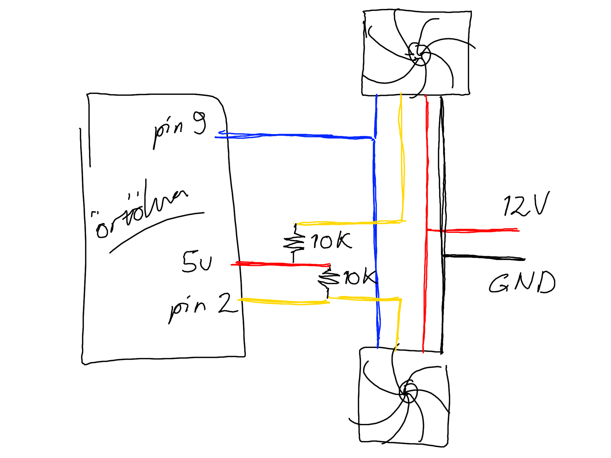
Þessi tenging meikar ekki mikinn sens fyrir mér þar sem aðeins einn gulur vír er tengdur í pin 2. Þetta virkaði samt og vorum við með fulla stjórn á báðum viftunum. Kóðinn sem við notuðum til að stýra þeim er neðst í þessari vinnubók
19.4.2022 (1:00)Næst settum við relayinn í samband og það gekk frekar vel og án vandamála.Næst fer hita og rakaskynjarinn í samband. Hér lendum við í vandamáli. Það er orðið soltið þema á þessum tímapunkti að ekki sé hægt að nota 5 voltin sem eru tengd beint í brauðbrettið. Vifturnar eru háðar 5V úttakinu úr örtölvunni, Relayinn þarf það líka en þar sem það var frátekið notuðum við 3,3V og það virkaði. Rakaskynjaranum langar líka í 5 voltin en einungis þau sem koma úr örtölvunni
19.4.2022 (4:00)Skynjarinn er virkilega búinn að bögga okkur. Við vorum með tvo mismunandi kóða. Þeir voru nánast eins samt. Einn þeirra sagðist ekki ná sambandi við skynjarann, hitt náði sambandi við hann. Seinna snerist þetta við þar sem upphaflegi kóðinn náði sambandi. Við gerðum ekkert.Mikill tími fór í þetta og vorum við alltaf að fara undir kassann að skipta um tengingar.
19.4.2022 (8:00)Á þessu stigi áttuðum við okkur á því að truflunin sem átti sér stað í rakaskynjaranum kom frá relayinum. Mín kenning er að þegar rakabætirinn er virkur er ómögulegt að virkja rakaskynjarann samtímis. Þess vegna þarf að slökkva fyrst á rakabætinum. Endurræsa örtölvuna og svo kveikja á rakabætinum. Og þá virkar þetta..?? (Finnur komst að þessu sambandi milli skynjarans og rakabætisins)Ég tel mig allavega þurfa smá hvíld. Ég bruna heim enda stór dagur á "morgun".